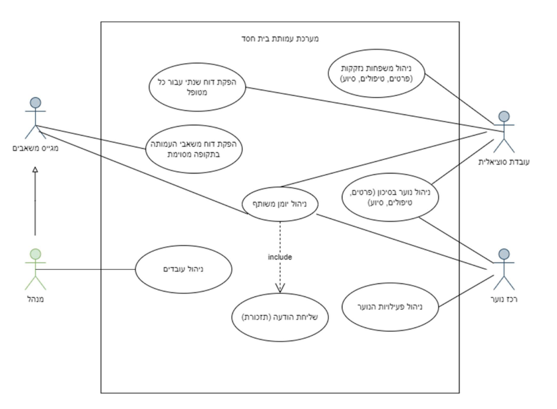

הוקם בשנת 1982 על ידי קמיל שחאדה ואשתו אגנס, בית חסד תומך באנשים שכבר היו כלואים, ומסייע להם להשתלב מחדש בחברה.
מציע תוכניות להכשרה מקצועית, ייעוץ ותוכניות לשילוב בקהילה על מנת להעזר לאנשים לעתיד טוב יותר.
נתמך ממגוון מקורות כולל תרומות בינלאומיות, סיוע מממשלתי ותרומות פרטיות.
קידום שליחות מוצלחת בחברה דרך תמיכה הוליסטית והשראה.
בהדרכתו של ג'מאל שחאדה, העבודה שלנו מתמקדת בשיקום ובקידום כלכלי חברתי, מופעלת ברוחביות וחדשנות.
מטופלים: אנשים המחפשים שירותי תמיכה ושיקום.
תורמים: אנשים וארגונים התורמים תמיכה כספית.
צוות: עובדים סוציאליים, מנהלים ומתנדבים המעורבים בהעברת התוכנית ובניהול ארגוני.
שותפים: ארגונים קהילתיים, ספקי שירותי בריאות ומוסדות חינוך המשתפים פעולה במתן שירותים.
Use Case
שכבת המשתמש: אינטראקציה עם המערכת באמצעות מחשבים אישיים או מכשירים ניידים.
שכבת שרת יישומים: היגיון עסקי, טיפול באימות משתמשים, ניהול תוכניות, עיבוד תרומות ועוד.
שרת מסד נתונים: אחסון מאובטח של נתונים כמו פרופילים, התקדמות תוכנית, ותרומות כספיות.
שימושיות: מערכת ידידותית למשתמש, במיוחד עבור רמות שונות של ידע טכנולוגי.
אבטחה: הגנה על נתונים רגישים והצפנה בהתאם לחוקי הפרטיות.
אמינות: בטיחות זמן פעולה וחוסנות לעמידה בעומס צפוי.
מטרות ברורות: קבע יעדים מפורשים לתוכניות שיקום כדי לספק כיוון ותחושת מטרה למשתתפים.
זרימה קבוצתית: טיפוח תחושת קהילה באמצעות פעילויות קבוצתיות המעודדות תקשורת וחוויות משותפות, מחזקות את המסע של המשתתפים לקראת אינטגרציה.
משוב: הטמעת מערכת המספקת משוב מיידי, המאפשרת למשתתפים להבין את ההתקדמות שלהם ולזהות תחומים לשיפור.
זיהוי: סקירת בסיס קוד ותיעוד באופן קבוע כדי לזהות אזורים שבהם מצטבר חוב טכני.
ניהול: תזמון עיבוד מחודש למחזורי הפיתוח כדי לטפל בחובות טכניים מבלי לעכב פיתוח תכונות חדשות.
מניעה: יישום תקני קידוד, ביקורות עמיתים ובדיקות אוטומטיות למניעת הצטברות של חוב טכני חדש.
כניסה מאובטחת וניהול משתמשים.
הרשמה לתכנית ומעקב אחרי מטופלים.
מערכת ניהול תרומות לתורמים.
כלי שילוב קהילתיים כמו פורומים או שיתוף סיפורי הצלחה.
מדרגיות להתמודדות עם עומסים משתנים.
אמצעי אבטחה להגנה על מידע.
שימושיות המבטיחה קלות שימוש לבסיס משתמשים מגוון.
עמידה בחוקי הפרטיות והגנת הנתונים הרלוונטיים.